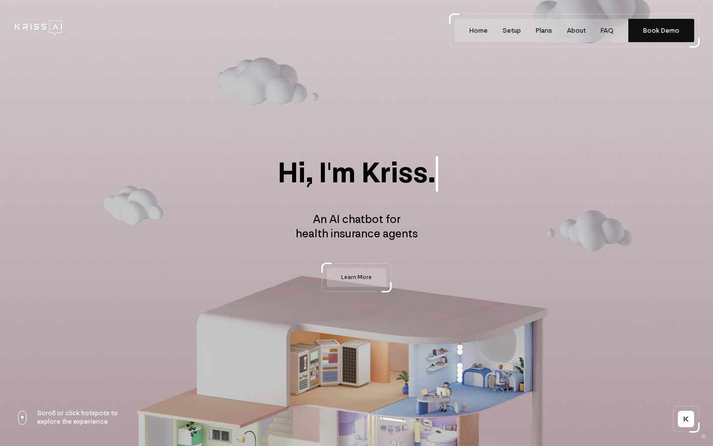

ai chatbot for dentists · isometric 3D clinic dollhouse · pastel pink + lilac + mint · frosted glass info cards · corner-bracket frames · camera-tour navigation · typewriter hero · soft clay renders
#e9dfe1#0f0f0f#f4efef#000000#ded2d5#5a5557#ffffff#0f0f0f#ffffff#cbaed9#0f0f0f#0f0f0f